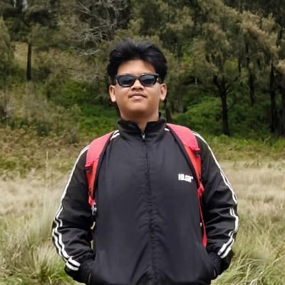

S1 Teknik Informatika
IPK saat ini: 3,7.

Mahasiswa Teknik Informatika
Saya Muhammad Aldhitofa Dimas Prayoga, biasa dipanggil Aldy, mahasiswa semester 5 Teknik Informatika di Universitas Muhammadiyah Malang.
Saya lahir di Medan, Sumatera Utara, pada 26 Desember 2005. Latar belakang pesantren dengan jurusan IPA membuat saya terbiasa disiplin dan belajar teratur. Sekarang saya sedang mendalami pengembangan web dan pemrograman lewat tugas dan proyek, dan ke depannya ingin lebih fokus ke bidang jaringan komputer.
IPK saat ini: 3,7.
Menempuh pendidikan menengah atas di lingkungan pesantren dengan peminatan IPA.
Halaman resume digital ini, dibangun murni dengan HTML semantik dan CSS tanpa framework, serta responsif di desktop dan HP.
Silakan hubungi saya untuk kolaborasi, magang, atau sekadar berdiskusi.